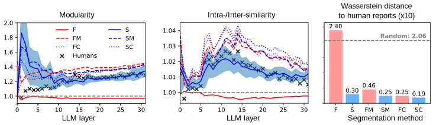

Abstract
Large language models (LLMs) have shown remarkable capabilities, but still struggle with processing extensive contexts, limiting their ability to maintain coherence and accuracy over long sequences. In contrast, the human brain excels at organising and retrieving episodic experiences across vast temporal scales, spanning a lifetime. We introduce EM-LLM, a novel approach that integrates key aspects of human episodic memory and event cognition into LLMs, enabling them to effectively handle practically infinite context lengths while maintaining computational efficiency.
EM-LLM organises sequences of tokens into coherent episodic events using a combination of Bayesian surprise and graph-theoretic boundary refinement in an on-line fashion. When needed, these events are retrieved through a two-stage memory process, combining similarity-based and temporally contiguous retrieval for efficient and human-like access to relevant information.
Experiments on the LongBench dataset demonstrate EM-LLM's superior performance, outperforming the state-of-the-art InfLLM model with an overall relative improvement of 4.3% across various tasks, including a 33% improvement on the PassageRetrieval task. Furthermore, our analysis reveals strong correlations between EM-LLM's event segmentation and human-perceived events, suggesting a bridge between this artificial system and its biological counterpart.
Architecture
EM-LLM integrates crucial aspects of event cognition and episodic memory into Transformer-based LLMs. Our approach includes:
- Surprise-based event segmentation
- Graph-theoretic boundary refinement
- Two-stage memory retrieval process
Performance Results
We tested EM-LLM on the LongBench dataset, across a wide range of long-context tasks, comparing it to the current state-of-the-art InfLLM model. Here's a quick look at how we did:
| Task | InfLLM | Best EM-LLM (Imp.) | Task | InfLLM | Best EM-LLM (Imp.) |
|---|---|---|---|---|---|
| NarrativeQA | 22.12 | 22.45 (+1.49%) | SAMSum | 42.52 | 42.89 (+0.87%) |
| MultiNews | 26.70 | 26.69 (-0.04%) | 2WikiMQA | 22.31 | 23.74 (+6.41%) |
| Qasper | 29.33 | 29.38 (+0.17%) | PassageRetrieval | 64.00 | 85.42 (+33.47%) |
| TREC | 69.00 | 70.50 (+2.17%) | Musique | 17.68 | 18.77 (+6.17%) |
| MultiFieldQA | 47.42 | 47.62 (+0.42%) | LCC | 56.67 | 57.03 (+0.63%) |
| TriviaQA | 86.67 | 87.62 (+1.10%) | GovReport | 31.03 | 31.62 (+1.90%) |
| HotpotQA | 36.56 | 39.99 (+9.38%) | RepoBench-P | 52.97 | 53.68 (+1.34%) |
| QMSum | 23.49 | 23.99 (+2.13%) | Average Score: | 41.90 | 43.70 (+4.30%) |
Table 1: EM-LLM performance on LongBench compared to our baseline InfLLM. The "Best EM-LLM" column shows the highest score achieved by an EM-LLM variant (either with/out boundary refinement and contiguity buffer), with the relative improvement over InfLLM in parentheses.
As you can see, EM-LLM shows consistent improvements, with standout performances in PassageRetrieval and HotpotQA.
But wait, there's more! We're currently running tests with additional models and datasets, including ∞-Bench with very promising results. Stay tuned for these expanded results, which will give an even fuller picture of EM-LLM's capabilities.
Human-like Event Segmentation
Our analysis reveals strong correlations between EM-LLM's surprise-based event segmentation and human-perceived events, suggesting a bridge between these two systems. For example, consider the figure below:
This graph presents results from a study where participants listened to a podcast and indicated points they perceived as event boundaries. We then compared various AI segmentation methods, including EM-LLM, against these human annotations. The height of each bar represents how closely the method aligns with human judgments. Notably, our surprise-based approaches (S, SM, SC) consistently outperform fixed-interval methods (F, FM, FC), with EM-LLM closely mirroring human intuition. This alignment suggests that EM-LLM's event detection mechanism captures something fundamental about how humans naturally segment continuous experiences.
Conclusion
EM-LLM represents a significant step forward in the development of language models with extended context-processing capabilities. By bridging insights from cognitive science with machine learning, our approach not only enhances the performance of LLMs on long-context tasks but also provides a scalable computational framework for testing hypotheses about human memory.
Cite Us
@inproceedings{FoundasEMLLM2024,
title={Human-like Episodic Memory for Infinite Context LLMs},
author={Fountas, Zafeirios and Benfeghoul, Martin A and Oomerjee, Adnan
and Christopoulou, Fenia and Lampouras, Gerasimos
and Bou-Ammar, Haitham and Wang, Jun},
booktitle={ArXiv},
year={2024}
}